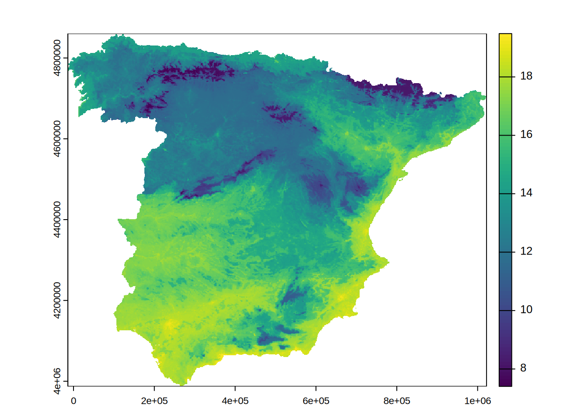

install.packages("mlr3verse")
install.packages("mlr3spatial")
install.packages("mlr3vis")
install.packages("sf")
install.packages("terra")mlr3
Questions beforehand
In caret, if we want to use spatial data, we have to specifically exclude the geometry column of the sf object. We lose the spatial information in the process of model training and prediction. However, this information can be critical, e.g. if we want to use CAST::errorprofiles or CAST::knncv. Is this also the case for mlr3 and tidymodels?
Setup
library(sf)
library(terra)Casestudy data
covariates = terra::rast("data/predictors.tif")
temperature = sf::read_sf("data/temp_train.gpkg")
spain = sf::read_sf("data/spain.gpkg") |> st_cast("POLYGON") |> st_transform(st_crs(temperature))
temperature = terra::extract(covariates, temperature, bind = TRUE) |>
sf::st_as_sf()
# the sf object cannot contain a column named "X" or "Y". Otherwise the task creation will fail because "Assertion on 'data' failed: Must have unique colnames"
temperature$X = NULL
temperature$Y = NULLTerminology specific to the example data:
spainis the region outline - for visualization purposes and knndm setupcovariatesare the spatially explicit data data to predict on (to prevent wording confusions with the predict function)temperatureare the measured temperature data (i.e. the response variable, i.e. the ground truth) along with the covariates at the measurement location
Official Documentation
https://mlr-org.com/ https://mlr3.mlr-org.com/ https://mlr3spatiotempcv.mlr-org.com/articles/mlr3spatiotempcv.html
library(mlr3verse)Loading required package: mlr3
Attaching package: 'mlr3'The following object is masked from 'package:terra':
resamplelibrary(mlr3spatial)
lgr::get_logger("mlr3")$set_threshold("warn")
lgr::get_logger("bbotk")$set_threshold("warn")First steps and observations
mlr3 uses R6 classes. This might be not intuitive for a lot of R users
Some terms you need to know when working with mlr3:
taskslearnersmeasures
mlr3 implements a language. You have to know a lot of specific terminology in order to comfortably use the functions.
learners = algorithms = method measures score
The R6 class thing has a serious disadvantage in the comfort functions of Rstudio, e.g. no in-line popup help of available parameters of a model. You have to know and look up the parameters to set in the ranger function.
Using frameworks has some disadvantages: num.trees vs. ntree
Initialization of mlr3 objects
# Create a regression task with spatial data. "temp" is the target variable, i.e. the response
# define a spatiotemporal task
task_spain = mlr3spatial::as_task_regr_st(temperature,
target = "temp",
coordinate_names = "geometry",
coords_as_features = TRUE,
crs = st_crs(temperature))
# define a data split stratetgy
train_test_split = partition(task_spain, ratio = 0.7) # simple train test split
# define the learner i.e. the modelling method
rfmodel = lrn("regr.ranger", num.trees = 100, mtry = 4)
# define the measurement with which the model gets evaluated
measure_rmse = msr("regr.rmse")The defined objects all contain specific methods (thats the R6 logic) with which we can now train, predict and validate the temperature prediction.
Model training
rfmodel$train(task_spain, row_ids = train_test_split$train)
rfmodel$modelRanger result
Call:
ranger::ranger(dependent.variable.name = task$target_names, data = task$data(), case.weights = task$weights$weight, mtry = 4L, num.threads = 1L, num.trees = 100L)
Type: Regression
Number of trees: 100
Sample size: 136
Number of independent variables: 22
Mtry: 4
Target node size: 5
Variable importance mode: none
Splitrule: variance
OOB prediction error (MSE): 1.062495
R squared (OOB): 0.8751171 Validation and Prediction
# predicting on the left out test cases
test_prediction = rfmodel$predict(task_spain, train_test_split$test)
test_prediction$score(measure_rmse)regr.rmse
0.8705112 # predicting on the spatial raster:
# The mlr3 R6 logic is then thrown out of the window with a function like this:
prediction = mlr3spatial::predict_spatial(covariates, rfmodel)Warning in warn_deprecated("DataBackend$data_formats"):
DataBackend$data_formats is deprecated and will be removed in the future.plot(prediction)
Note
Unfortunately, we have to use two different prediction functions for different predictor data formats. If you have tabular data like the left out test samples, you can keep the R6 logic and use rfmodel$predict(). If you have spatial raster data you need to use mlr3spatial::predict_spatial().
Spatial cross-validation hyperparameter tuning
Define a strategy
library(mlr3spatiotempcv)
resampling_blockcv = rsmp("spcv_block", folds = 5, range = 5000)
# define a new learner, with specific possibilities of hyperparameters
rfmodel = lrn("regr.ranger",
num.trees = 100,
mtry = to_tune(c(2,4,6,10,12)),
min.node.size = to_tune(c(5,10,15)))
tuning_blockcv = ti(task = task_spain,
resampling = resampling_blockcv,
learner = rfmodel,
measures = measure_rmse,
terminator = trm("none"),
store_benchmark_result = TRUE,
store_models = TRUE)
tuner_grid_search = mlr3tuning::tnr("grid_search")
tuner_grid_search$optimize(tuning_blockcv) min.node.size mtry learner_param_vals x_domain regr.rmse
<char> <char> <list> <list> <num>
1: 5 12 <list[4]> <list[2]> 0.8417781tuning_blockcv$archive$data min.node.size mtry regr.rmse warnings errors runtime_learners
<char> <char> <num> <int> <int> <num>
1: 15 6 0.8969090 0 0 0.105
2: 10 12 0.8534228 0 0 0.182
3: 15 4 0.9575751 0 0 0.096
4: 5 4 0.9380000 0 0 0.163
5: 15 12 0.8609700 0 0 0.154
6: 10 10 0.8554212 0 0 0.135
7: 10 6 0.8876704 0 0 0.117
8: 10 2 1.0916955 0 0 0.081
9: 10 4 0.9542641 0 0 0.091
10: 5 6 0.8782287 0 0 0.148
11: 5 2 1.0826886 0 0 0.093
12: 15 10 0.8491014 0 0 0.140
13: 15 2 1.1840658 0 0 0.071
14: 5 12 0.8417781 0 0 0.218
15: 5 10 0.8586259 0 0 0.328
uhash x_domain timestamp batch_nr
<char> <list> <POSc> <int>
1: 8c1c41ac-d47e-432d-9e5d-4b0f1fc2a860 <list[2]> 2025-01-28 13:58:58 1
2: 99b3c2a0-a16f-45dd-9fab-e6e1c9987ff1 <list[2]> 2025-01-28 13:58:59 2
3: e567957f-1661-47b1-b969-2947be5cf589 <list[2]> 2025-01-28 13:58:59 3
4: f8dd0ec9-407a-4c23-8506-6530d45c5574 <list[2]> 2025-01-28 13:58:59 4
5: 53c96645-a66c-4ea9-8999-d538e116d407 <list[2]> 2025-01-28 13:58:59 5
6: 51ec8cdc-6cc5-4510-8df0-a9efaa90248c <list[2]> 2025-01-28 13:59:00 6
7: c30473b3-2c60-46b4-bc6d-ec697ecb5148 <list[2]> 2025-01-28 13:59:00 7
8: e57df43f-bdff-4292-b90d-e4ade59c2c4f <list[2]> 2025-01-28 13:59:00 8
9: 691e18d9-64e1-4f01-a236-ff728ab7bfce <list[2]> 2025-01-28 13:59:00 9
10: f3bbc7b1-b3ec-4ad5-9c2c-60ddbb0f944f <list[2]> 2025-01-28 13:59:01 10
11: 9f1808a3-ebac-4b10-9398-65c868d425f3 <list[2]> 2025-01-28 13:59:01 11
12: 72e8a60c-b616-426e-90f6-b0053ad9d232 <list[2]> 2025-01-28 13:59:01 12
13: 1abf1546-109f-4357-8993-b4497d90d365 <list[2]> 2025-01-28 13:59:01 13
14: 84eb1b7c-49d9-47a6-b2fc-19e46cbfac3e <list[2]> 2025-01-28 13:59:02 14
15: 3a2388f5-79b3-46e5-a921-57d1e465b2d2 <list[2]> 2025-01-28 13:59:02 15Final model tuning with optimized hyperparameter
tuned_rfmodel = lrn("regr.ranger")
tuned_rfmodel$param_set$values = tuning_blockcv$result_learner_param_vals
tuned_rfmodel$train(task_spain)
tuned_prediction = predict_spatial(covariates, tuned_rfmodel)
plot(tuned_prediction)
knndm-cv
knndm_setup = rsmp("spcv_knndm", folds = 5, modeldomain = spain$geom[1,])
knndm_setup<ResamplingSpCVKnndm>: Spatial 'K-fold Nearest Neighbour Distance Matching
* Iterations: 5
* Instantiated: FALSE
* Parameters: modeldomain=<sfc_POLYGON>, folds=5# there is a bug hereFeature Selection
library(mlr3fselect)
library(mlr3filters)
flt()
select_mode = fs("sequential", min_features = )
rfmodel_fs = lrn("regr.ranger",
num.trees = 20,
mtry = 2,
min.node.size = 5)
feature_selection = fselect(
fselector = select_mode,
task = task_spain,
learner = rfmodel_fs,
resampling = resampling_blockcv,
measure = measure_rmse
)
instance = fselect(
fselector = fs("sequential"),
task = tsk_pen,
learner = lrn_rpart,
resampling = rsmp("cv", folds = 3),
measure = msr("classif.acc")
)Appendix
- Data preprocessing and feature engineering
- Model selection and specification
- Hyperparameter tuning and feature selection
- Spatial cross-validation
- Model interpretation and visualization
library(mlr3)
library(mlr3misc)
library(mlr3pipelines)
library(mlr3tuning)
library(mlr3inferr)